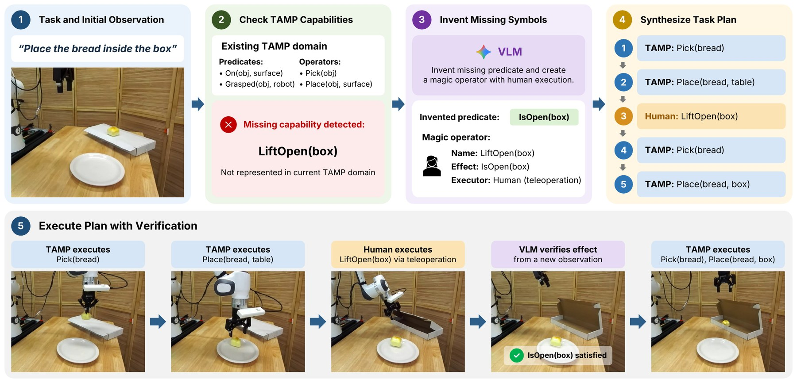

TAMP runs routine pick-and-place stages on its own, but a fixed planning domain cannot cover every stage of a long-horizon task. Full teleoperation covers everything but spends human time on stages the robot could already do. TANDEM automates the supported stages and hands only the rest to a human. This collects more demonstrations for the same human time and gives a better fine-tuned VLA. The policy-improvement plot on the right is illustrative, not measured data.
2.9×
More demonstrations than full teleoperation for the same human time
0% → 60%
Average task success of π0.5-DROID after fine-tuning on 20 TANDEM demos
60% vs 17%
TANDEM vs. HITL-TAMP average success, with direct VLA inference at 15 Hz
Abstract
Human teleoperators spend substantial time demonstrating behaviors that robots can already perform autonomously, limiting the scalability of data collection for robot foundation models. Task and motion planning (TAMP) can automate many of these behaviors, but a fixed planning domain may not support every stage of a long-horizon manipulation task.
We present TANDEM (Tamp with As-Needed DEMonstrations for Efficient Model fine-tuning), a system that combines TAMP with selective human teleoperation to collect demonstrations for tasks beyond the planner's capabilities. Our key idea is to represent human assistance as an on-demand planning capability. Given a language instruction and visual observation, TANDEM uses pretrained vision-language models to extend the planning domain with missing predicates and human-executed magic operators. This allows the planner to incorporate human intervention for unsupported task stages while automating the rest, without requiring task-specific engineering to specify when assistance is needed. During execution, the system verifies each human stage from a fresh visual observation before resuming planning. To support fine-tuning vision-language-action (VLA) models, TANDEM also uses example pretraining trajectories to align planner-generated motions with the target model's pretraining distribution.
We evaluate TANDEM on five long-horizon manipulation tasks beyond the TAMP domain's capabilities. With the same amount of human intervention time, TANDEM collects 2.9× as many demonstrations as pure teleoperation. Fine-tuning a pretrained π0.5-DROID model on these demonstrations increases average task success from 0% to 60%.
Method
TANDEM turns an incomplete TAMP system into a demonstration generator. A human steps in only where autonomous planning is insufficient, and the planner decides where that is.

Overview. Given the instruction “Place the bread inside the box” and an initial observation, TANDEM checks whether the base TAMP domain can express the task. The domain can pick and place, but it has no notion of an open box. A VLM invents the predicate IsOpen(box) and a magic operator LiftOpen(box) executed by a human. The task plan interleaves TAMP phases with the human phase. After teleoperation, TANDEM re-perceives the scene and verifies the intended effect before autonomous planning resumes.
1 · Detect
Find missing capabilities
requirement not in M0 = ⟨Ψ0, Ω0⟩
A requirement is unsupported when the base predicates cannot describe the desired state, or no operator can achieve it. A VLM reasons over the instruction, the image and the domain to find such requirements. No one has to list them by hand for each task.
2 · Extend
Invent predicates & magic operators
domain MH = ⟨Ψ0∪ΨΔ, Ω0∪ΩΔ⟩
Each invented predicate has a name and a natural-language definition, which also serves as the prompt for a VLM classifier. A magic operator has the same symbolic structure as any TAMP operator, but a human teleoperator executes it.
3 · Execute
Plan phases, verify handoffs
plan Φ = ((g1, e1), …, (gN, eN))
Each phase names a subgoal and an executor: robot or human. Robot phases go to the TAMP solver. Human phases go to teleoperation. After every human phase, a fresh image is checked against the operator's effects before planning resumes.
4 · Align
Distribution-aligned TAMP
trajectory τ = {(τk, φk)}k=1..N
All phases are recorded as one complete demonstration. Autonomous phases use DATAFARM to match the joint configurations, motion style and timing of the VLA's pretraining data. This way, planner segments are useful fine-tuning data too.
Tasks
Five long-horizon tasks. Each combines routine pick-and-place with at least one stage outside the pick-and-place TAMP domain, such as covering, solving a puzzle, or opening a book or box. Raw TAMP fails all five.
Pick 3 Breads & CoverPlace three breads on a plate, then cover them with a cloth.TAMPTeleop
Remove Toy & Solve PuzzleRemove an obstructing toy, then fit the puzzle piece into its cut-out.TAMPTeleop
Bread in Blue Bowl, Banana in Green Bowl, Cover BreadSort objects into bowls by instruction, then cover the bread with a cloth.TAMPTeleop
Remove Pen, Place on Tray, Open BookClear a pen off a book onto a tray, then open the book.TAMPTeleop
Pick Bread, Place on Plate, Open Box, Bread in BoxMove the bread off the box, open the box, then put the bread inside. The human phase sits between two TAMP phases.TAMPTeleopTAMP
Results
We fine-tune π0.5-DROID on 20 successful TANDEM demonstrations per task. We compare it with the pretrained model and with HITL-TAMP, the closest prior approach. HITL-TAMP trains a local policy for the human-executed segments and keeps the TAMP planner at test time.
Downstream policy performance
Show full results table
Task
π0.5-DROID
HITL-TAMP
TANDEM
SR
Prog.
SR
Prog.
SR
Prog.
Pick 3 Breads & Cover
0%
30%
30%
69%
45%
68%
Remove Toy & Solve Puzzle
0%
30%
0%
30%
50%
66%
Bread in Blue Bowl, Banana in Green Bowl, Cover Bread
0%
32%
15%
68%
75%
87%
Remove Pen, Place on Tray, Open Book
0%
52%
30%
70%
50%
77%
Pick Bread, Place on Plate, Open Box, Bread in Box
0%
33%
10%
40%
80%
93%
Average
0%
35.4%
17.0%
55.4%
60.0%
78.2%
SR is success rate; Prog. is task progress. Best value in each row in bold.
The pretrained VLA cannot do these tasks. π0.5-DROID succeeds on 0% of trials across all five tasks, with 30–52% task progress.
20 TANDEM demonstrations are enough to learn the full task. Average success rises to 60.0% and progress to 78.2%, reaching 80% success on Bread in Box.
Complete demonstrations beat hybrid execution. TANDEM reaches 60.0% average success vs. 17.0% for HITL-TAMP, and higher success on every task.
No planner at deployment. HITL-TAMP keeps a slow TAMP planner in its execution pipeline. The TANDEM-trained VLA runs the whole task on its own at 15 Hz.
Human time goes further with TANDEM
On Pick 3 Breads & Cover, both methods get the same human operator time. The human teleoperates only the covering stage in TANDEM, but every stage in full teleoperation, so the same budget buys about 2.9× as many demonstrations.
Matched human-time budgets
Same time, more data. 524 s of human time yields 40 TANDEM demonstrations vs. 14 by teleoperation; 785 s yields 60 vs. 21.
More data, better policies. TANDEM reaches 45 / 75 / 80 / 75% success across the four budgets, vs. 30 / 30 / 50 / 65% for teleoperation. Performance saturates at about 60 demonstrations.
Where collection attempts fail
TANDEM collected 100 successful demonstrations from 253 attempts (39.5%). Only 2.6% of failures come from TANDEM's own predicate and operator invention or phase switching. Most come from the underlying TAMP system.
Collection attempts by outcome
Each bar is all attempts for one task, collected until 20 successes. Failures are attributed to one stage: invention or phase switching, TAMP planning, TAMP execution, or the human operator. Across all failures, the shares are 2.6% / 15.7% / 78.4% / 3.3%.
Limitations
TANDEM inherits the limitations of its underlying TAMP system, which is the main source of failed collection attempts. Magic operators hand low-level execution entirely to the teleoperator, so the planner does not reason about whether or how a human can achieve an effect. Verification also relies on VLM-generated predicates judged from a single image. This can be hard for effects that are difficult to see.
BibTeX
@article{tandem2026,
title = {TANDEM: Task and Motion Planning with As-Needed Demonstrations
for Efficient Vision-Language-Action Model Fine-tuning},
author = {Anonymous Authors},
year = {2026},
note = {Under review}
}